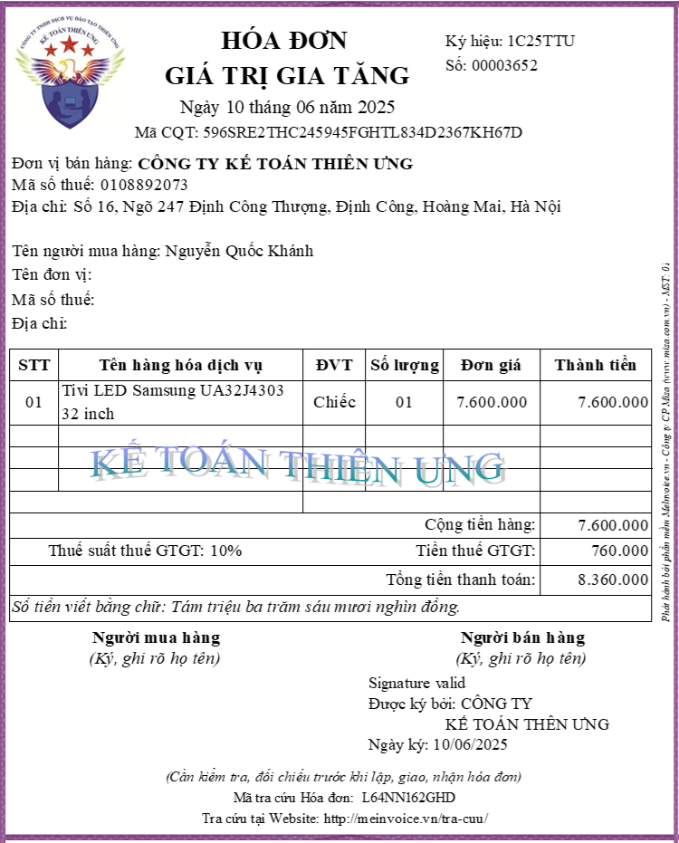
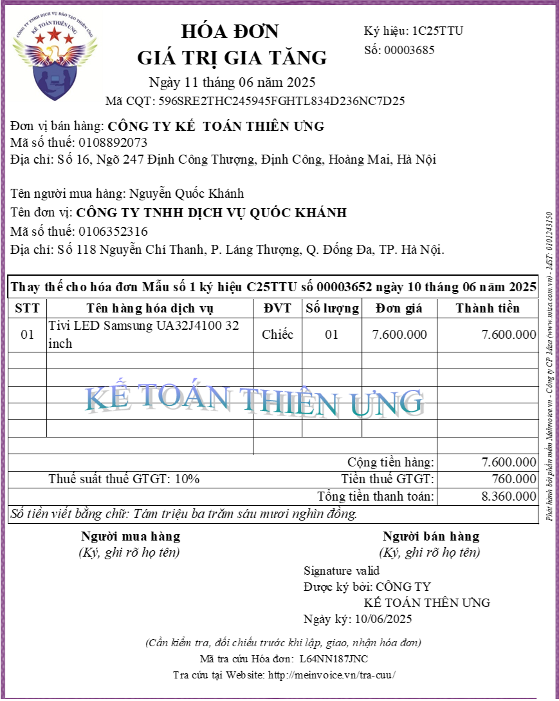
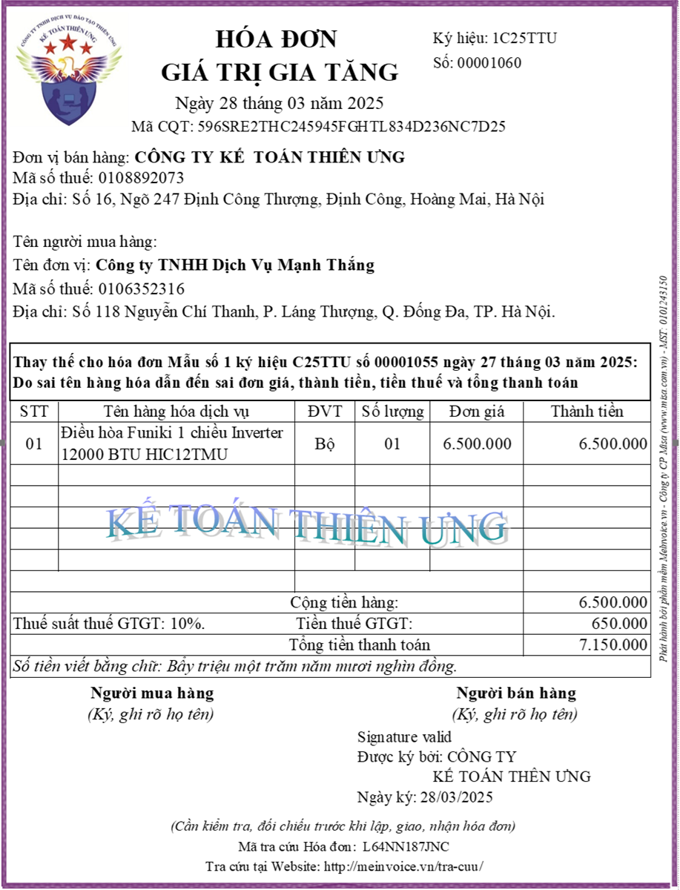

Hướng dẫn cách lập hóa đơn thay thế theo quy định về hóa đơn điện tử mới nhất năm 2025 tại Nghị định 70/2025/NĐ-CP và thông tư 32/2025/TT-BTC
| Các quy định về việc lập hóa đơn thay thế trong năm 2025 | |
| Giai Đoạn: Trước ngày 01/06/2025 | Giai Đoạn: Từ ngày 01/06/2025 trở đi |
|
Thực hiện theo quy định tại:
+ Điều 19 của Nghị định số 123/2020/NĐ-CP + Khoản 1 Điều 7 Thông tư 78/2021/TT-BTC |
Thực hiện theo quy định tại: + Khoản 13 Điều 1 Nghị định 70/2025/NĐ-CP sửa đổi Nghị định 123/2020/NĐ-CP ngày 19/10/2020 quy định về hóa đơn, chứng từ
(Nghị định 70/2025/NĐ-CP ban hành ngày 20/03/2025, có hiệu lực từ ngày 01/06/2025)
+ Thông tư 32/2025/TT-BTC ban hành ngày 31/05/2025, có hiệu lực từ ngày 01/06/2025 và thay thế Thông tư số 78/2021/TT-BTC
|
Dưới đây, Công ty đào tạo Kế Toán Diệu Tâm sẽ hướng dẫn các bạn cách lập hóa đơn thay thế theo quy định tại từng giai đoạn:
1. Cách lập hóa đơn thay thế theo nghị định 70/2025/NĐ-CP (áp dụng từ ngày 01/06/2025 trở đi)
1.1. Trình tự thực hiện thay thế hóa đơn:
Theo quy định tại Khoản 13 Điều 1 Nghị định 70/2025/NĐ-CP sửa đổi, bổ sung Điều 19 của Nghị định số 123/2020/NĐ-CP thì:
Bước 1: Lập biên bản thỏa thuận thay thế hóa đơn hoặc thông báo cho người mua
Theo quy định tại Khoản 13 Điều 1 Nghị định 70/2025/NĐ-CP sửa đổi, bổ sung Điều 19 của Nghị định số 123/2020/NĐ-CP thì:
Bước 1: Lập biên bản thỏa thuận thay thế hóa đơn hoặc thông báo cho người mua
Trước khi thay thế hóa đơn điện tử đã lập sai phải lập biên bản thỏa thuận hoặc thông báo cho người mua
+ Đối với trường hợp người mua là doanh nghiệp, tổ chức kinh tế, tổ chức khác, hộ kinh doanh, cá nhân kinh doanh thì người bán và người mua phải lập văn bản thỏa thuận ghi rõ nội dung sai;
+ Trường hợp người mua là cá nhân thì người bán phải thông báo cho người mua hoặc thông báo trên website của người bán (nếu có).
Người bán thực hiện lưu giữ văn bản thỏa thuận tại đơn vị và xuất trình khi có yêu cầu.
+ Đối với trường hợp người mua là doanh nghiệp, tổ chức kinh tế, tổ chức khác, hộ kinh doanh, cá nhân kinh doanh thì người bán và người mua phải lập văn bản thỏa thuận ghi rõ nội dung sai;
+ Trường hợp người mua là cá nhân thì người bán phải thông báo cho người mua hoặc thông báo trên website của người bán (nếu có).
Người bán thực hiện lưu giữ văn bản thỏa thuận tại đơn vị và xuất trình khi có yêu cầu.
Bước 2: Người bán lập hóa đơn điện tử mới thay thế cho hóa đơn điện tử lập sai.
Hóa đơn điện tử mới thay thế hóa đơn điện tử đã lập sai phải có dòng chữ “Thay thế cho hóa đơn Mẫu số... ký hiệu... số... ngày... tháng... năm”.
Bước 3: Người bán ký số hóa đơn thay thế rồi gửi cho người mua
+ Đối với trường hợp sử dụng hóa đơn điện tử không có mã của cơ quan thuế: Người bán ký số trên hóa đơn điện tử mới thay thế cho hóa đơn điện tử đã lập sai => sau đó người bán gửi cho người mua
+ Đối với trường hợp sử dụng hóa đơn điện tử có mã của cơ quan thuế: Người bán ký số trên hóa đơn điện tử mới thay thế cho hóa đơn điện tử đã lập sai => sau đó người bán gửi cơ quan thuế để cơ quan thuế cấp mã cho hóa đơn điện tử mới => Sau khi hóa đơn thay thế đã được cấp mã thì người bán gửi cho người mua
1.2. Tình huống phát sinh để hướng dẫn lập hóa đơn thay thế
- Ngày 10/06/2025, Công ty Kế Toán Diệu Tâm bán Tivi cho công ty Quốc Khánh
Khi bàn giao hàng hóa, Công ty Kế Toán Diệu Tâm đã xuất hóa đơn như sau:
- Ngày 10/06/2025, Công ty Kế Toán Diệu Tâm bán Tivi cho công ty Quốc Khánh
Khi bàn giao hàng hóa, Công ty Kế Toán Diệu Tâm đã xuất hóa đơn như sau:

=> Hóa đơn điện tử số 00003652 đã được cơ quan thuế cấp mã
Đến ngày 11/06/2025, công ty Quốc Khánh phát hiện ra hóa đơn điện tử số 00003652 chưa ghi tên công ty, địa chỉ và mã số thuế của công ty Quốc Khánh
=> Hóa đơn điện tử số 00003652 đang bị sai tên công ty, địa chỉ và mã số thuế của người mua
=> Công ty Phú Minh đã thông báo cho công ty Diệu Tâm biết để xử lý sai sót trên Hóa đơn điện tử số 00003652
Xác định thông tin cho tình huống như sau:
Theo quy định tại Khoản 13 Điều 1 Nghị định 70/2025/NĐ-CP thì:
13. Sửa đổi tên Điều 19 và sửa đổi, bổ sung Điều 19 như sau:
“Điều 19. Thay thế, điều chỉnh hóa đơn điện tử
1. Trường hợp phát hiện hóa đơn điện tử đã lập sai (bao gồm hóa đơn điện tử đã được cấp mã của cơ quan thuế, hóa đơn điện tử không có mã của cơ quan thuế đã gửi dữ liệu đến cơ quan thuế) thì người bán thực hiện xử lý như sau:
b) Trường hợp có sai: mã số thuế; sai về số tiền ghi trên hóa đơn, sai về thuế suất, tiền thuế hoặc hàng hóa ghi trên hóa đơn không đúng quy cách, chất lượng thì có thể lựa chọn điều chỉnh hoặc thay thế hóa đơn điện tử như sau:
b.1) Người bán lập hóa đơn điện tử điều chỉnh hóa đơn đã lập sai.
Hóa đơn điện tử điều chỉnh hóa đơn điện tử đã lập sai phải có dòng chữ “Điều chỉnh cho hóa đơn Mẫu số... ký hiệu... số... ngày... tháng... năm”.
b.2) Người bán lập hóa đơn điện tử mới thay thế cho hóa đơn điện tử lập sai.
Hóa đơn điện tử mới thay thế hóa đơn điện tử đã lập sai phải có dòng chữ “Thay thế cho hóa đơn Mẫu số... ký hiệu... số... ngày... tháng... năm”.
Mà hóa đơn điện tử số 00003652 đã được cơ quan thuế cấp mã và có sai về mã số thuế nên phải thực hiện xử lý sai sót bằng 1 trong 2 cách đó là: lập hóa đơn điều chỉnh hoặc lập hóa đơn mới thay thế.
=> Công ty Diệu Tâm và Công ty Phú Minh đã thống nhất lựa chọn cách: sử dụng hóa đơn thay thế
(Người bán lập hóa đơn điện tử mới thay thế cho hóa đơn điện tử đã lập sai)
Việc xử lý hóa đơn điện tử có sai sót số 00003652 được thực hiện luôn vào ngày 11/06/2025Cụ thể từng bước như sau:
Bước 1: Lập biên bản thỏa thuận thay thế hóa đơn hoặc thông báo cho người mua
Vì người mua (công ty Quốc Khánh) là doanh nghiệp nên trước khi thay thế hóa đơn điện tử đã lập sai thì người bán và người mua phải lập văn bản thỏa thuận ghi rõ nội dung sai
|
CỘNG HÒA XÃ HỘI CHỦ NGHĨA VIỆT NAM Độc lập – Tự do – Hạnh phúc ------------------ BIÊN BẢN THỎA THUẬN LẬP HÓA ĐƠN ĐIỆN TỬ MỚI THAY THẾ CHO HÓA ĐƠN ĐIỆN TỬ CÓ SAI SÓT (Số: 01/2025/TTHĐĐTSS-TU-QK) Căn cứ vào hợp đồng mua bán số 01/2025/HĐMB-TU-QK ký ngày 10/06/2025 Căn cứ vào Nghị định 70/2025/NĐ-CP ngày 20/03/2025 sửa đổi bổ sung Nghị định số 123/2020/NĐ-CP ngày 19 tháng 10 năm 2020 quy định về hoá đơn, chứng từ Căn cứ vào thực tế mua bán hàng hóa Hôm nay, ngày 03 tháng 07 năm 2025 hai bên chúng tôi gồm có: Đơn vị bán hàng: CÔNG TY TƯ VẤN MINH PHÚC
Mã số thuế: 0113579246
Đơn vị mua hàng: CÔNG TY TNHH DỊCH VỤ QUỐC KHÁNH
Địa chỉ: Số 16, Ngõ 247 Định Công, Định Công, Q. Hoàng Mai, Tp. Hà Nội. Đại diện: Bà Lê Ngọc Diệp Chức vụ: Giám đốc
Mã số thuế: 0106352316
Hai bên thống nhất lập hóa đơn mới thay thế cho hoá đơn điện tử số 00003652 ký hiệu 1C25TTU ngày 10/06/2025, đã được cấp mã cơ quan thuế là 596SRE2THC245945FGHTL834D2367KH67DĐịa chỉ: Số 118 Phạm Minh Trí, P. Láng Thượng, Q. Đống Đa, TP. Hà Nội. Đại diện: Ông Nguyễn Quốc Khánh Chức vụ: Giám đốc
Lý do thay thế: Hóa đơn điện tử viết sai tên công ty, địa chỉ và mã số thuế của người mua
Cụ thể như sau:1. Nội dung đã ghi sai: tại hoá đơn điện tử số 00003652 ký hiệu 1C25TTU ngày 10/06/2025
Các nội dung về:
+ Tên đơn vị:
+ Mã số thuế: .
+ Địa chỉ:
đang bị bỏ trống chưa ghi
2. Nội dung đúng theo giấy phép đăng ký kinh doanh của bên mua và thỏa thuận trên hợp đồng mua bán số 01/2025/HĐMB-TU-QK là:
Tên đơn vị: Công ty TNHH Dịch Vụ Quốc Khánh
Mã số thuế: 0106352316
Địa chỉ: Số 118 Phạm Minh Trí, P. Láng Thượng, Q. Đống Đa, TP. Hà Nội.
3. Hai bên thống nhất như sau: Bên bán sẽ lập hóa đơn mới vào ngày 11/06/2025 để thay thế cho hóa đơn điện tử lập sai Căn cứ vào hóa đơn mới thay thế cho hóa đơn điện tử lập sai, bên bán và bên mua kê khai thuế theo quy định tại Nghị định 70/2025/NĐ-CP Biên bản được lập thành 02 (hai) bản, mỗi bên giữ 01 (một) bản, có giá trị pháp lý như nhau.
|
Lưu ý: Người bán (Công ty Diệu Tâm) thực hiện lưu giữ văn bản thỏa thuận tại đơn vị và xuất trình khi có yêu cầu.
Để tải mẫu biên bản thay thế hóa đơn điện tử này về thì Kế Toán Diệu Tâm mời các bạn tham khảo tại đây:
Bước 2: Người bán lập hóa đơn điện tử điều chỉnh cho hóa đơn đã lập có sai sót, rồi ký, cấp mã, gửi cho người mua:
Khi lập hóa đơn thay thế bên bán cần thực hiện:
+ Ngày lập hóa đơn thay thế: Là ngày hiện tại (ngày 2 bên phát hiện ra sai sót và thống nhất lập hóa đơn mới thay thế mà 2 bên đã thỏa thuận trên biên bản thay thế hóa đơn)
+ Các chỉ tiêu nội dung trên hóa đơn thay thế: ghi đầy đủ tất cả nội dung trên hóa đơn
+/ Khi lập hóa đơn thay thế thì chúng ta sẽ thực hiện lập 1 số hóa đơn mới (Đúng) để thay thế (khắc phục) toàn bộ các lỗi sai của hóa đơn trước đó
(Sau khi lập hóa đơn thay thế thì hóa đơn có sai sót đó được gọi là hóa đơn bị thay thế, hóa đơn bị thay thế hết giá trị, doanh thu tính thuế chính là giá trị trên hóa đơn thay thế)
+/ Những chỉ tiêu nào trên hóa đơn trước bị sai thì ghi thành nội dung đúng như hoá đơn điện tử số 00003652 chưa ghi tên công ty, địa chỉ và mã số thuế của công ty Quốc Khánh thì trên hóa đơn thay thế sẽ ghi đầy đủ tên công ty, địa chỉ và mã số thuế của công ty Quốc Khánh theo đúng đăng ký kinh doanh của công ty Quốc Khánh
(Trên hóa đơn sai sót bị sai những lỗi nào, sai những chỉ tiêu nào thì trên hóa đơn thay thế sửa lại hết thành đúng)
+ Những chỉ tiêu nào trên hóa đơn trước không bị sai thì ghi lại đúng như vậy
Cụ thể hóa đơn thay thế có nội dung như sau:

1.3. Một vài các lưu ý khi lập hóa đơn thay thế theo nghị định 70/2025/NĐ-CP
+ Trường hợp trong tháng người bán đã lập sai cùng thông tin về người mua, tên hàng, đơn giá, thuế suất trên nhiều hóa đơn của cùng một người mua trong cùng tháng thì người bán được lập một hóa đơn điều chỉnh hoặc thay thế cho nhiều hóa đơn điện tử đã lập sai trong cùng tháng và đính kèm bảng kê các hóa đơn điện tử đã lập sai theo Mẫu số 01/BK-ĐCTT Phụ lục IA ban hành kèm theo Nghị định này.
+ Trường hợp hóa đơn điện tử đã lập sai và người bán đã xử lý theo hình thức điều chỉnh hoặc thay thế, sau đó lại phát hiện hóa đơn sai thì các lần xử lý tiếp theo người bán sẽ thực hiện theo hình thức đã áp dụng khi xử lý lần đầu;
1.4. Kê khai hóa đơn thay thế
Theo quy định tại Khoản 13 Điều 1 Nghị định 70/2025/NĐ-CP thì:
Người bán, người mua khai bổ sung vào kỳ phát sinh hóa đơn bị điều chỉnh, bị thay thế;
Người bán, người mua khai bổ sung vào kỳ phát sinh hóa đơn bị điều chỉnh, bị thay thế;
Chi tiết, Công ty đào tạo Kế Toán Diệu Tâm mời các bạn tham khảo tại đây:
Cách kê khai hóa đơn thay thế
1.5. Khi nào lập hóa đơn thay thế? Hóa đơn thay thế sử dụng trong những trường hợp nào?
Bắt đầu từ ngày 01/06/2025, thì hóa đơn thay thế sẽ được sử dụng trong 2 trường hợp sau đây:
Trường hợp 1: Tại Khoản 13 Điều 1 Nghị định 70/2025/NĐ-CP
13. Sửa đổi tên Điều 19 và sửa đổi, bổ sung Điều 19 như sau:
“Điều 19. Thay thế, điều chỉnh hóa đơn điện tử
1. Trường hợp phát hiện hóa đơn điện tử đã lập sai (bao gồm hóa đơn điện tử đã được cấp mã của cơ quan thuế, hóa đơn điện tử không có mã của cơ quan thuế đã gửi dữ liệu đến cơ quan thuế) thì người bán thực hiện xử lý như sau:
a) Trường hợp có sai về tên, địa chỉ của người mua nhưng không sai mã số thuế, các nội dung khác không sai thì người bán thông báo cho người mua về việc hóa đơn đã lập sai và không phải lập lại hóa đơn. Người bán thực hiện thông báo với cơ quan thuế về hóa đơn điện tử đã lập sai theo Mẫu số 04/SS-HĐĐT Phụ lục IA ban hành kèm theo Nghị định này.
b) Trường hợp có sai: mã số thuế; sai về số tiền ghi trên hóa đơn, sai về thuế suất, tiền thuế hoặc hàng hóa ghi trên hóa đơn không đúng quy cách, chất lượng thì có thể lựa chọn điều chỉnh hoặc thay thế hóa đơn điện tử như sau:
b.1) Người bán lập hóa đơn điện tử điều chỉnh hóa đơn đã lập sai.
Hóa đơn điện tử điều chỉnh hóa đơn điện tử đã lập sai phải có dòng chữ “Điều chỉnh cho hóa đơn Mẫu số... ký hiệu... số... ngày... tháng... năm”.
b.2) Người bán lập hóa đơn điện tử mới thay thế cho hóa đơn điện tử lập sai.
Hóa đơn điện tử mới thay thế hóa đơn điện tử đã lập sai phải có dòng chữ “Thay thế cho hóa đơn Mẫu số... ký hiệu... số... ngày... tháng... năm”.
Trường hợp 2: Tại khoản 6 điều 12 của Thông tư 32/2025/TT-BTC
6. Kể từ thời điểm doanh nghiệp, tổ chức, hộ, cá nhân kinh doanh sử dụng hóa đơn điện tử theo quy định tại Nghị định số 123/2020/NĐ-CP (được sửa đổi, bổ sung tại Nghị định số 70/2025/NĐ-CP) và quy định tại Thông tư này, nếu phát hiện hóa đơn đã lập theo quy định tại Nghị định số 51/2010/NĐ-CP ngày 14 tháng 5 năm 2010, Nghị định số 04/2014/NĐ-CP ngày 17 tháng 01 năm 2014 của Chính phủ và các văn bản hướng dẫn của Bộ Tài chính mà hóa đơn đã lập sai thì người bán và người mua phải lập văn bản thỏa thuận ghi rõ nội dung sai và lập hóa đơn điện tử mới (hóa đơn điện tử có mã của cơ quan thuế hoặc hóa đơn điện tử không có mã) thay thế cho hóa đơn đã lập sai. Hóa đơn điện tử thay thế hóa đơn đã lập sai phải có dòng chữ “Thay thế cho hóa đơn Mẫu số... ký hiệu... số... ngày... tháng... năm”. Người bán ký số trên hóa đơn điện tử mới thay thế hóa đơn đã lập sai (hóa đơn lập theo Nghị định số 51/2010/NĐ-CP, Nghị định số 04/2014/NĐ-CP của Chính phủ và các văn bản hướng dẫn của Bộ Tài chính) để gửi cho người mua (đối với trường hợp sử dụng hóa đơn điện tử không có mã) hoặc người bán gửi cơ quan thuế để được cấp mã cho hóa đơn điện tử thay thế hóa đơn đã lập (đối với trường hợp sử dụng hóa đơn điện tử có mã của cơ quan thuế).
Lưu ý với các bạn rằng: Từ ngày 01/06/2025 trở đi thì Không dùng hóa đơn thay thế để xử lý hàng bán bị trả lại
=> Từ ngày 01/06/2025 trở đi chỉ dụng hóa đơn điều chỉnh để xử lý hàng bạn bị trả lại mà không sử dụng hóa đơn thay thế
Khoản 13 Điều 1 Nghị định 70/2025/NĐ-CP
13. Sửa đổi tên Điều 19 và sửa đổi, bổ sung Điều 19 như sau:
“Điều 19. Thay thế, điều chỉnh hóa đơn điện tử
4. Hóa đơn để điều chỉnh hóa đơn điện tử đã lập trong một số trường hợp như sau:
c) Xử lý hóa đơn điện tử trong trường hợp trả lại hàng hoá, dịch vụ:
c.1) Trường hợp trả lại hàng hóa: Trường hợp người mua trả lại toàn bộ hoặc một phần hàng hóa (bao gồm cả trường hợp đổi hàng làm thay đổi giá trị của hàng hóa đã mua) thì người bán lập hóa đơn điều chỉnh, trừ trường hợp các bên có thỏa thuận về việc người mua lập hóa đơn khi trả lại hàng hóa thì người mua lập hóa đơn điện tử giao cho người bán; người bán, người mua thực hiện nghĩa vụ thuế theo quy định khi bán hàng hóa.
Chi tiết hơn thì công ty đào tạo Kế Toán Diệu Tâm mời các bạn xem tại đây:2. Cách lập hóa đơn thay thế theo quy định tại thông tư 78/2021/TT-BTC và Nghị định 123/2020/NĐ-CP (áp dụng trước ngày 01/06/2025)
* Trước khi lập hóa đơn thay thế:
+ Trường hợp người bán và người mua có thỏa thuận về việc lập văn bản thỏa thuận trước khi lập hóa đơn thay thế cho hóa đơn đã lập có sai sót thì người bán và người mua lập văn bản thỏa thuận ghi rõ sai sót, sau đó người bán lập hóa đơn điện tử thay thế hóa đơn đã lập có sai sót.
+ Trường hợp người bán và người mua không có thỏa thuận về việc lập văn bản thỏa thuận trước khi lập hóa đơn thay thế cho hóa đơn đã lập có sai sót thì người bán và người mua không cần lập văn bản thỏa thuận.
(Theo công văn số 34787/CTHN-TTHT ngày 18/7/2022 của Cục Thuế TP. Hà Nội về việc xử lý sai sót đối với hóa đơn điện tử thì Việc lập biên bản điều chỉnh trước khi phát hành HĐĐT điều chỉnh hoặc HĐĐT mới chỉ bắt buộc nếu các bên có thỏa thuận; nếu không có thỏa thuận thì được miễn lập biên bản điều chỉnh.)
* Khi lập hóa đơn thay thế:
+ Hóa đơn điện tử mới thay thế hóa đơn điện tử đã lập có sai sót phải có dòng chữ “Thay thế cho hóa đơn Mẫu số... ký hiệu... số... ngày... tháng... năm”
+ Ngày trên hóa đơn thay thế: Là ngày hiện tại (ngày 2 bên phát hiện ra sai sót và thống nhất lập hóa đơn mới thay thế)
+ Thuế suất thuế GTGT trên hóa đơn thay thế:
+ Ngày trên hóa đơn thay thế: Là ngày hiện tại (ngày 2 bên phát hiện ra sai sót và thống nhất lập hóa đơn mới thay thế)
+ Thuế suất thuế GTGT trên hóa đơn thay thế:
Theo Công văn số 2121/TCT-CS ngày 29/5/2023 của Tổng cục Thuế về việc lập hóa đơn thì:
Trường hợp hàng hóa, dịch vụ thuộc đối tượng được giảm thuế GTGT đã bán -> đã xuất hóa đơn theo mức thuế suất được giảm (8%) tại theo quy định tại thời điểm bán => Rồi sau đó phát hiện hóa đơn đã lập đó có sai sót -> phải lập hóa đơn điều chỉnh hoặc thay thế thì khi lập hóa đơn điều chỉnh hoặc thay thế thì cần xác định như sau:
+/ Trường hợp 1: Nếu thời điểm lập hóa đơn điều chỉnh hoặc thay thế vẫn còn trong thời hạn được giảm thuế GTGT => Trên hóa đơn điều chỉnh hoặc thay thế sẽ ghi theo mức thuế suất được giảm là 8%
+/ Trường hợp 2: Nếu thời điểm lập hóa đơn điều chỉnh hoặc thay thế không còn trong thời hạn được giảm thuế GTGT nữa thì xác định theo các lỗi sai như sau:
+ Đối với các sai sót không ảnh hưởng tới tiền hàng và thuế GTGT phải nộp hoặc điều chỉnh giá tính thuế thì hóa đơn điều chỉnh hoặc thay thế áp dụng thuế suất thuế GTGT 8%;
+ Trường hợp sai sót về số lượng hàng hóa dẫn đến sai sót về tiền hàng và thuế GTGT thì hóa đơn điều chỉnh hoặc thay thế áp dụng thuế suất thuế GTGT theo quy định tại thời điểm lập hóa đơn điều chỉnh hoặc thay thế.
* Sau khi lập hóa đơn thay thế xong thì thực hiện: Ký số -> Gửi cho CQT để cấp mã -> Gửi cho người mua.
* Lưu ý: Trường hợp hóa đơn điện tử đã lập có sai sót và người bán đã xử lý theo hình thức lập hóa đơn thay thế theo quy định tại điểm b khoản 2 Điều 19 Nghị định số 123/2020/NĐ-CP, sau đó lại phát hiện hóa đơn tiếp tục có sai sót thì các lần xử lý tiếp theo người bán sẽ thực hiện theo hình thức đã áp dụng khi xử lý sai sót lần đầu (tức là cũng phải áp dụng theo hình thức lập hóa đơn thay thế)
Ví dụ: Ngày 12/6/2025, Công ty Kế Toán Diệu Tâm lập hóa đơn số 00001000, ký hiệu 1C25TTU khi bán hàng hóa cho công ty Hoàng Anh (Hóa đơn gốc - Hóa đơn F0)
=> Đến ngày 15/06/2025, phát hiện hóa đơn số 00001000, ký hiệu 1C25TTU (Hóa đơn gốc F0) bị sai
=> Hai bên thỏa thuận thống nhất: Lập hóa đơn mới thay thế cho hóa đơn sai
=> Công ty Kế Toán Diệu Tâm đã lập hóa đơn thay thế số 00001005, ký hiệu 1C25TTU ngày 15/06/2025 (Hóa đơn thay thế lần 1 - Hóa đơn F1)
=> Đến ngày 03/07/2025, công ty Hoàng Anh tiếp tục phát hiện ra hóa đơn số 00001005, ký hiệu 1C25TTU ngày 15/06/2025 (Hóa đơn thay thế lần 1 - F1) bị sai
=> Do lần đầu đã xử lý hóa đơn viết sai F0 số 00001000 bằng hóa đơn thay thế nên các lần xử lý tiếp theo người bán sẽ thực hiện theo hình thức đã áp dụng khi xử lý sai sót lần đầu đó là dùng hóa đơn thay thế
=> Công ty Diệu Tâm sẽ lập hóa đơn mới thay thế (lập Hóa đơn thay thế lần 2 - F2) vào ngày 03/07/2025 để thay thế cho hóa đơn số 00001005, ký hiệu 1C25TTU ngày 15/06/2025 (F2 thay thế cho Hóa đơn thay thế lần 1)
=> Nếu sau đó nếu tiếp phát hiện ra hóa đơn thay thế F2 có sai sót thì các lần xử lý tiếp theo người bán (công ty Diệu Tâm) vẫn sẽ thực hiện theo hình thức đã áp dụng khi xử lý sai sót lần đầu là theo hình thức thay thế
Việc lựa chọn hình thức xử lý hóa đơn viết sai là Hóa đơn thay thế hoặc hóa đơn điều chỉnh này là ĐỘC LẬP cho từng hóa đơn sai sót.
Việc lựa chọn hình thức xử lý hóa đơn viết sai là Hóa đơn thay thế hoặc hóa đơn điều chỉnh này là ĐỘC LẬP cho từng hóa đơn sai sót.
Ví dụ:
+ Hóa đơn gốc số 00001000 khi có sai sót đã lựa chọn hình thức xử lý là lập hóa đơn thay thế
+ Thì đến các hóa đơn gốc sau mà có sai sót thì lại được lựa chọn hình thức xử lý hóa đơn viết sai là Hóa đơn thay thế hoặc hóa đơn điều chỉnh (Các hóa đơn gốc khác nhau thì được lựa chọn cách xử lý hóa đơn viết sai khác nhau)
+ Hóa đơn gốc số 00001000 khi có sai sót đã lựa chọn hình thức xử lý là lập hóa đơn thay thế
+ Thì đến các hóa đơn gốc sau mà có sai sót thì lại được lựa chọn hình thức xử lý hóa đơn viết sai là Hóa đơn thay thế hoặc hóa đơn điều chỉnh (Các hóa đơn gốc khác nhau thì được lựa chọn cách xử lý hóa đơn viết sai khác nhau)
3. Mẫu hóa đơn thay thế:
Tình huống ví dụ để lập hóa đơn thay thế:
* Ngày 25/03/2025, Công ty Kế Toán Diệu Tâm ký hợp đồng kinh tế số 03/2025/HĐKT-TU-MT về việc mua bán Điều Hòa cho công ty Mạnh Thắng:
=> Trên hợp đồng thỏa thuận hàng bán như sau:
| Tên hàng hoá dịch vụ | ĐVT | Số lượng | Đơn giá | Thành tiền |
Tiền thuế (VAT 10%) |
Tổng thanh toán |
|
Điều hòa Funiki 1 chiều Inverter 12000 BTU HIC12TMU
|
Bộ | 01 | 6.500.000 | 6.500.000 | 650.000 | 7.150.000 |
* Ngày 27/03/2025, Khi bàn giao điều hòa cho công ty Mạnh Thắng thì Công ty Kế Toán Diệu Tâm đã xuất hóa đơn số 00001055 như sau:
| Tên hàng hoá dịch vụ | ĐVT | Số lượng | Đơn giá | Thành tiền |
Tiền thuế (VAT 10%) |
Tổng thanh toán |
|
Điều hòa Funiki 1 chiều 12000 BTU HSC12TMU
|
Bộ | 01 | 5.800.000 | 5.800.000 | 580.000 | 6.380.000 |
* Đến ngày 28/03/2025, công ty Mạnh Thắng kiểm tra hóa đơn số 00001055 thì phát hiện ra hóa đơn số 00001055 ngày 27/03/2025 đã xuất sai tên hàng hóa dẫn đến đơn giá, thành tiền, tiền thuế và tổng thanh toán đều không đúng với thỏa thuận trước đó của 2 bên tại hợp đồng kinh tế số 03/2025/HĐKT-TU-MT
=> Hai bên thống nhất xử lý hóa đơn sai sót số 00001055 bằng cách lập hóa đơn thay thế
